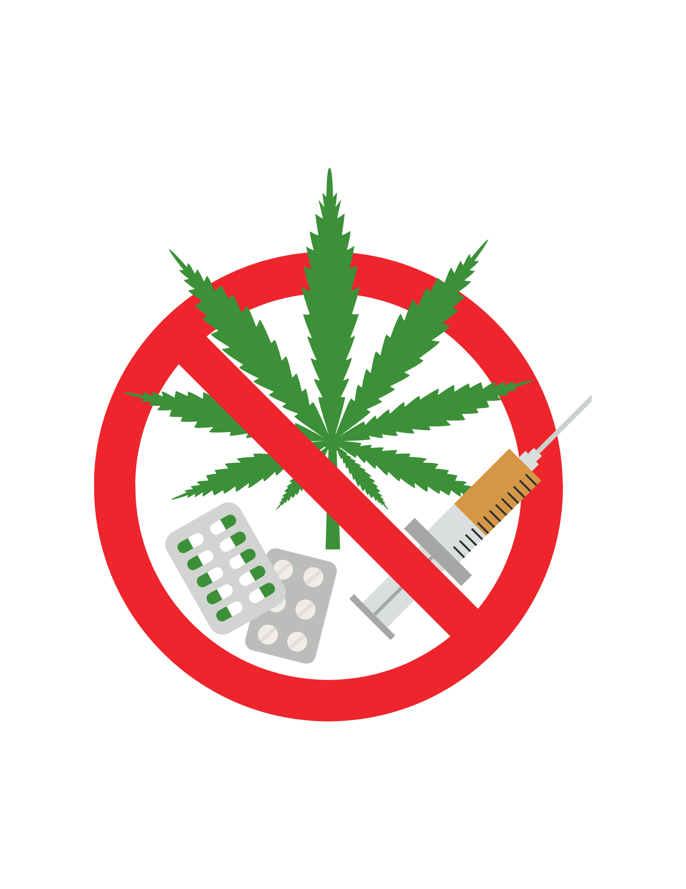
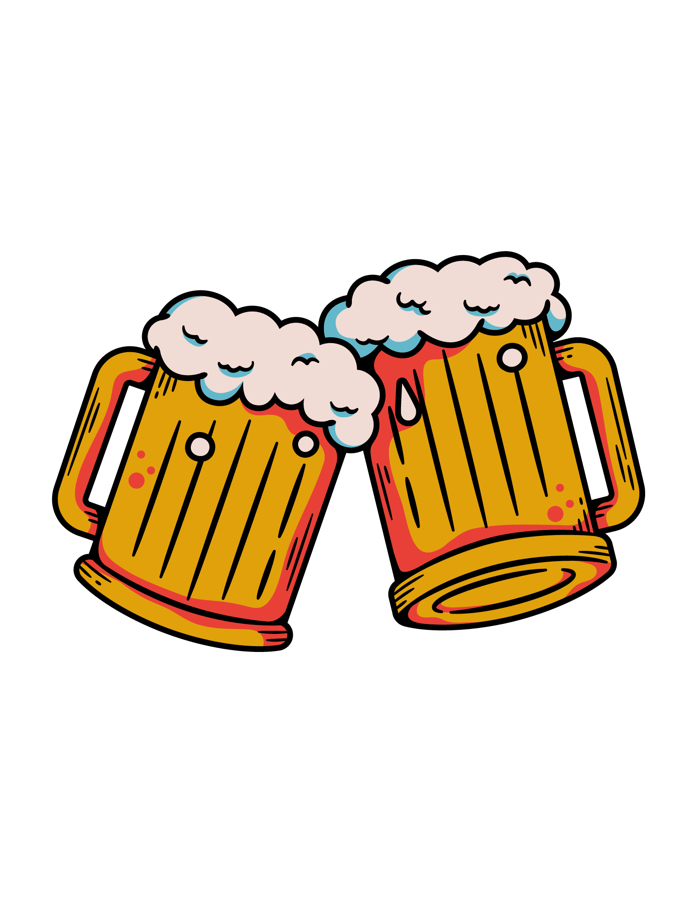
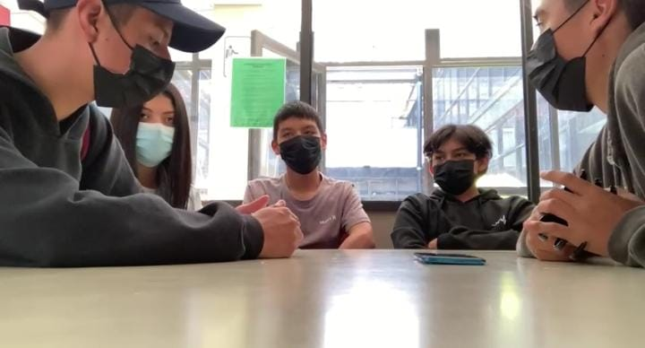
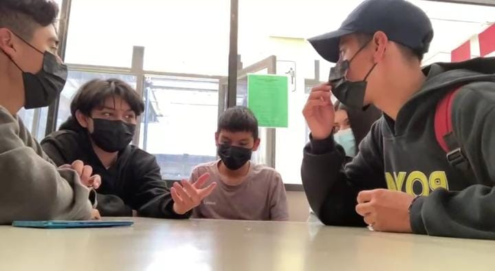

Una mesa redonda que aborda las malas decisiones
en la adolescencia y el consumo de drogas que
puede servirte como una herramienta poderosa
para generar conciencia sobre los peligros y
las consecuencias de estas acciones.
Al enfocarse en el tema de aceptar drogas de un
desconocido solo por el deseo de encajar,
el video resalta cómo la presión social
puede influir en las elecciones de los
adolescentes.
Los adolescentes son propensos a tomar una desicion de
consumir drogas o cualquier tipo de sustancias.

A esta edad muchos de los adolescentes tienen su primera
experiencia en el alcohol.

Los amigos, al ser el circulo social mas apegado al adolescente,
suele influenciarse y tomar malas desiciones por ellos.
Al no tener conciencia sobre los metodos anticonceptivos, toman
la desicion de hacerlo sin proteccion.
Toman desiciones malas al salirse de clases tan solo por una
experiencia, la cual oerjudicara su estancia academica.
 |
 |  |  |